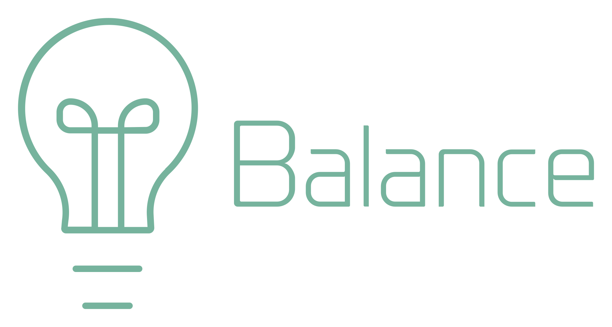

<mat-sidenav-container class="h-screen">
  <mat-sidenav #drawer mode="over" class="mat-elevation-z8 px-2 py-10">
    <router-outlet name="site-navigation"></router-outlet>
  </mat-sidenav>
  <mat-sidenav-content class="flex">

    <mat-toolbar color="primary" class="mat-elevation-z8 h-20">
      <button mat-icon-button (click)="drawer.toggle()" aria-label="open side bar site navigation"
        matTooltip="Site Navigation">
        <mat-icon>menu</mat-icon>
      </button>
      <div class="branding">
        
      </div>
      <span class="spacer"></span>
      <!-- <router-outlet name="system-options"></router-outlet> -->
      <!-- <button mat-fab (click)="accountSettings()" class="py-10 px-28" aria-label="account settings" matTooltip="Account settings" matTooltipPosition="below">
        <mat-icon>account_circle</mat-icon>
      </button> -->
    </mat-toolbar>

    <main class="py-10 px-20">
      <router-outlet #outlet="outlet"></router-outlet>
    </main>

    <mat-toolbar color="primary" class="flex bottom-0 absolute h-20">
    </mat-toolbar>

  </mat-sidenav-content>
</mat-sidenav-container>
